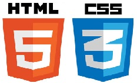

El “Hypertext Markup Language”, más conocido como HTML, es un lenguaje de programación que, como su nombre indica, describe el formato que tendrá el contenido de un documento.
Este estándar sirve de referencia para la elaboración de páginas web en sus diferentes versiones, definiendo una estructura básica y un código (denominado código HTML) para la definición de contenido de una página web, como texto, imágenes, etc.
HTML5 es la ultima version disponoble para este lenguaje.

Que es CSS
CSS es un lenguaje de hojas de estilos creado para controlar el aspecto o presentación de los documentos electrónicos definidos con HTML y XHTML. CSS es la mejor forma de separar los contenidos y su presentación y es imprescindible para crear páginas web complejas.